第 10 章 PID 控制
根据对炼油、化工、纸浆和造纸行业中一万一千多个控制器的调查，97% 的调节控制器使用 PID 反馈。
本章讨论比例积分微分控制，也就是 PID 控制的基本性质，以及选择控制器参数的方法。我们还会分析执行器饱和和时滞的影响。这两者是许多反馈系统中的重要特征，并且需要相应的补偿方法。最后，我们把 PID 控制器的实现作为一个例子，说明如何用模拟或数字计算实现反馈控制系统。
10.1 基本控制作用
PID 控制已经在第 1.5 节中引入，也已经在几个例子中使用过。到目前为止，它是工程系统中最常见的反馈使用方式。它既出现在简单装置中，也出现在拥有成千上万个控制器的大型工厂中。PID 控制器有许多不同形式：可以是独立控制器，也可以是层级式、分布式控制系统的一部分，还可以嵌入到部件内部。大多数 PID 控制器并不使用微分作用，所以严格说应当称为 PI 控制器；不过本书仍用 PID 作为这一类控制器的通称。越来越多的证据还表明，PID 控制也出现在生物系统中 [206]。
图 10.1 给出了带 PID 控制器的闭环系统框图。图 10.1a 中系统的控制信号 \(u\) 完全由误差 \(e\) 生成，没有前馈项，对应状态反馈情形中的 \(k_rr\)。图 10.1b 显示了一种常见替代结构，其中比例作用和微分作用不作用于参考信号；这些结构的组合会在第 10.5 节讨论。在调节问题中，命令信号 \(r\) 称为参考信号；在 PID 控制文献中，它也称为设定值。误差反馈形式的理想 PID 控制器输入输出关系为
因此，控制作用是三项之和：比例反馈、积分项和微分作用。正因为如此，PID 控制器最早被称为三项控制器。控制器参数是比例增益 \(k_p\)、积分增益 \(k_i\) 和微分增益 \(k_d\)。有时也用积分时间常数 \(T_i\) 和微分时间常数 \(T_d\) 代替积分增益和微分增益，其中 \(k_i=k_p/T_i\)、\(k_d=k_pT_d\)。
式 (10.1) 表示的是理想化控制器。它是理解 PID 控制器的有用抽象，但要得到实际可用的控制器，还必须做若干修改。在讨论这些实际问题之前，先建立一些关于 PID 控制的直觉。
先考虑纯比例反馈。图 10.2a 显示在不同增益设置下，过程输出对参考值单位阶跃的响应。由于没有前馈项，输出永远无法达到参考值，因此会留下非零稳态误差。令过程和控制器传递函数分别为 \(P(s)\) 和 \(C(s)\)，则从参考到输出的传递函数为
因此单位阶跃输入下的稳态误差为
对图 10.2a 中的系统，当 \(k_p=1,2,5\) 时，稳态误差分别为 0.5、0.33 和 0.17。增益增大时误差减小，但系统也变得更振荡。注意图中控制信号的初值等于控制器增益。
为了避免稳态误差，可把比例项改为
其中 \(u_{ff}\) 是前馈项，用来调节所需稳态值。如果选择 \(u_{ff}=r/P(0)=k_rr\)，并且没有扰动，那么输出会与参考值完全相等，就像状态空间情形中那样。不过，这需要精确知道过程动态，而通常做不到。因此，在 PID 文献中称为 reset 的参数 \(u_{ff}\) 往往必须手动调节。
正如第 6.4 节所见，积分作用保证过程输出在稳态下与参考一致，并提供了一种替代前馈项的方法。由于这个结果非常重要，我们给出一个一般性证明。考虑式 (10.1) 给出的控制器。假设存在一个稳态，其中 \(u=u_0\)、\(e=e_0\)。由式 (10.1) 可得
除非 \(e_0=0\) 或 \(k_i=0\)，否则这与 \(u_0\) 为常数矛盾。因此，如果使用积分作用并且系统达到稳态，误差必为零。注意，这个论证没有假设过程是线性的，也没有对扰动作线性假设。不过，它假设平衡点存在。用积分作用实现零稳态误差通常比用前馈更好，因为前馈需要精确知道过程参数。
积分作用也可以从频域角度理解。PID 控制器的传递函数为
控制器在零频处具有无穷增益，即 \(C(0)=\infty\)。于是由式 (10.2) 可得 \(G_{yr}(0)=1\)，这意味着阶跃输入下没有稳态误差。
积分作用还可看作一种自动生成比例控制器 (10.3) 中前馈项 \(u_{ff}\) 的方法。图 10.3a 给出了一种实现方式：控制器输出经过低通滤波后，以正增益反馈回来。这种实现称为自动复位，是积分控制的早期发明之一。由框图代数可得图 10.3a 中系统传递函数
这正是 PI 控制器的传递函数。
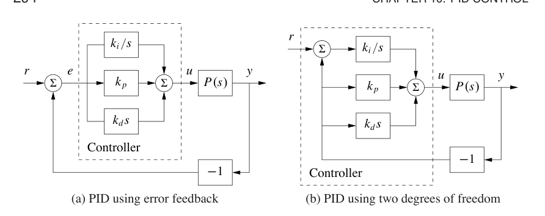
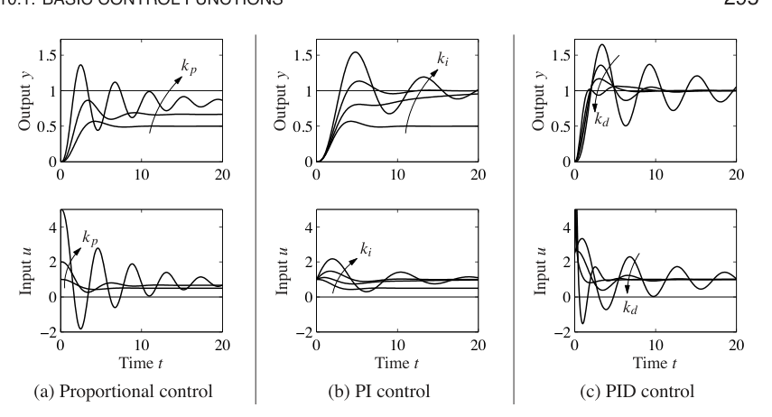
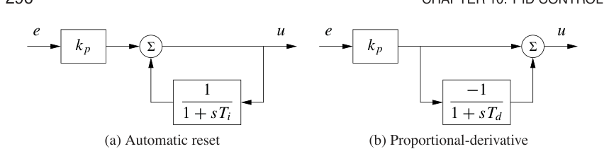
图 10.2b 用阶跃输入说明积分作用的性质。比例增益固定为 \(k_p=1\)，积分增益为 \(k_i=0,0.2,0.5,1\)。\(k_i=0\) 对应纯比例控制，稳态误差为 50%。使用积分作用后稳态误差被消除。积分增益较小时，响应缓慢爬向参考值；积分增益较大时，响应更快，但系统也更振荡。
积分增益 \(k_i\) 是衡量负载扰动衰减能力的一个有用指标。考虑一个受 PID 控制的闭环系统，假设系统稳定，初始静止，并且所有信号均为零。在过程输入端施加单位阶跃扰动。经过暂态以后，过程输出趋于零，控制器输出收敛到补偿扰动所需的值。由式 (10.1) 可得
因此，积分误差与积分增益 \(k_i\) 成反比。积分增益可以衡量扰动衰减的有效程度。较大的 \(k_i\) 能有效衰减扰动，但过大的增益会带来振荡行为、较差鲁棒性，甚至可能导致不稳定。
现在回到一般 PID 控制器，考虑微分项 \(k_d\) 的作用。回忆微分反馈最初的动机，是提供预测或提前作用。注意比例项和微分项的组合可以写成
其中 \(e_p(t)\) 可解释为通过线性外推得到的 \(t+T_d\) 时刻误差预测值。预测时间 \(T_d=k_d/k_p\) 是控制器的微分时间常数。
微分作用可以通过信号与其低通滤波版本之间的差值实现，如图 10.3b 所示。该系统的传递函数为
因此，系统传递函数 \(G(s)=sT_d/(1+sT_d)\) 在低频下近似微分器，也就是 \(|s|T_d\ll1\) 时。
图 10.2c 显示了微分作用的效果：没有微分作用时系统振荡；随着微分增益增加，阻尼增强。如果微分增益过高，性能又会变差。当输入为阶跃时，由微分项产生的控制器输出会包含冲激，这在图 10.2c 中清晰可见。使用图 10.1b 所示控制器结构可以避免这个冲激。
虽然 PID 控制是在工程应用中发展出来的，它也出现在自然界中。生物系统中通过反馈衰减扰动常称为适应。例 8.11 中讨论的瞳孔反射就是典型例子，那里说眼睛会适应不断变化的光强。类似地，带积分作用的反馈称为完美适应 [206]。在生物系统中，比例、积分和微分作用也由具有动态行为的子系统组合产生，这与工程系统中的做法类似。例如，多个激素之间的相互作用可以产生 PI 作用 [68]。
例 10.1 视网膜中的 PD 作用
视网膜中视锥光感受器的响应，是由视锥细胞和水平细胞组合产生比例和微分作用的一个例子。视锥细胞是受光刺激的主要感受器，它们又刺激水平细胞；水平细胞向视锥细胞提供抑制性负反馈。图 10.4a 给出了系统示意图。若把神经信号表示为平均脉冲率这样的连续变量，系统可用普通微分方程建模。文献 [203] 表明，该系统可表示为
其中 \(u\) 是光强，\(x_1\) 和 \(x_2\) 分别是视锥细胞和水平细胞的平均脉冲率。图 10.4b 给出了系统框图。图 10.4c 的阶跃响应表明，系统具有较大的初始响应，随后进入较低的恒定稳态响应，这是比例和微分作用的典型特征。仿真中使用的参数为 \(k=4\)、\(T_c=0.025\)、\(T_h=0.08\)。
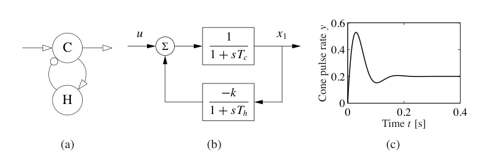
10.2 复杂系统的简单控制器
前几章讨论的许多设计方法都有一个共同特征：控制器复杂度直接反映模型复杂度。第 7 章用输出反馈设计控制器时，我们发现对单输入单输出系统而言，控制器阶数与模型阶数相同；如果需要积分作用，阶数可能再高一阶。如果把类似设计方法用于 PID 控制，就需要低阶过程模型，才能方便地分析结果。
低阶模型可以从第一性原理得到。任何稳定系统，只要输入变化足够慢，都可以用静态系统建模。类似地，如果质量、动量或能量的储存只需要一个变量捕捉，一阶模型就足够；典型例子包括道路上汽车的速度、刚性旋转系统的角速度、储罐液位，以及充分混合容积中的浓度。如果质量、能量和动量的储存需要两个状态变量捕捉，系统动态就是二阶的；典型例子包括道路上汽车的位置、刚性卫星的稳定、两个相连储罐的液位，以及双室模型。模型降阶也有大量可用技术。本章关注的设计方法，会把模型简化到足以捕捉 PID 设计所需关键性质的程度。
先分析积分控制。只要对闭环系统的要求适度，一个稳定系统就可以用积分控制器控制。为了设计控制器，假设过程传递函数是常数 \(K=P(0)\)。积分控制下的环路传递函数为 \(Kk_i/s\)，闭环特征多项式就是
如果用期望闭环时间常数 \(T_{cl}\) 指定性能，则积分增益为
这一分析要求 \(T_{cl}\) 足够大，使过程传递函数可以近似为常数。
对于不能很好用常数增益表示的系统，可以用环路传递函数的 Taylor 展开得到更好近似：
选择
会得到鲁棒性较好的系统，第 12.5 节会讨论这一点。于是控制器增益为
期望闭环时间常数约为
例 10.2 轻敲模式 AFM 的积分控制
习题 9.2 讨论了原子力显微镜轻敲模式中垂直运动动态的一个简化模型。系统动态传递函数为
其中 \(a=\zeta\omega_0\)，\(\tau=2\pi n/\omega_0\)，增益已经归一化为 1。有
由式 (10.6) 可知，积分增益可选择为
所得环路传递函数的奈奎斯特图和 伯德图见图 10.5。
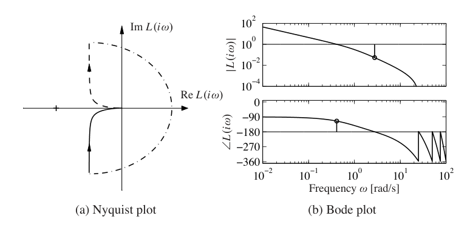
一阶系统的传递函数为
使用 PI 控制器时，闭环系统特征多项式为
因此，通过适当选择控制器增益，可以任意配置闭环极点。如果要求闭环系统具有特征多项式
则控制器参数为
如果要求闭环响应慢于开环系统，一个合理选择是 \(a_1=a+\alpha\)、\(a_2=\alpha a\)。如果要求响应快于开环系统，可选择 \(a_1=2\zeta\omega_0\)、\(a_2=\omega_0^2\)，其中 \(\omega_0\) 和 \(\zeta\) 是主导模态的无阻尼固有频率和阻尼比。这些选择会显著影响系统鲁棒性，第 12.4 节会讨论。模型有效性给出了 \(\omega_0\) 的上限。较大的 \(\omega_0\) 要求快速控制动作，如果取值过大，执行器可能饱和。一阶模型也不太可能在高频处代表真实动态。下面用一个例子说明设计过程。
例 10.3 使用 PI 反馈的巡航控制
考虑汽车上坡时保持车速的问题。例 5.14 中已经看到，在研究 PI 控制时，只要油门没有达到饱和限制，线性模型和非线性模型差别很小。例 5.11 给出了汽车的一个简单线性模型：
其中 \(v\) 是汽车速度，\(u\) 是发动机输入，\(\theta\) 是道路坡度。参数为
我们用这个模型寻找车辆速度控制器的合适参数。从油门到速度的传递函数是一阶系统。由于开环动态很慢，自然可以指定一个更快的闭环系统，例如要求闭环系统为二阶系统，具有阻尼比 \(\zeta\) 和无阻尼固有频率 \(\omega_0\)。控制器增益由式 (10.7) 给出。
图 10.6 显示一辆汽车的速度和油门变化。汽车最初在水平路面上行驶，并在 \(t=5\) 到 6 秒之间遇到坡度从 \(0^\circ\) 增加到 \(4^\circ\) 的上坡。设计 PI 控制器时，选择 \(\zeta=1\) 可以得到无超调响应，如图 10.6a 所示。选择 \(\omega_0\) 时需要在响应速度和控制动作之间折中：较大值给出较快响应，但需要更快控制动作。图 10.6b 展示了这种折中。随着 \(\omega_0\) 增大，最大速度误差减小，但控制信号也变化得更快。简单模型 (10.8) 假设驱动力会瞬时响应油门命令。对于快速变化，可能存在额外动态需要考虑。驱动力变化率也有物理限制，这同样限制了可允许的 \(\omega_0\)。合理的 \(\omega_0\) 范围约为 0.5 到 1.0。注意，即使 \(\omega_0=0.2\)，图 10.6 中的最大速度误差也只有 1 m/s。
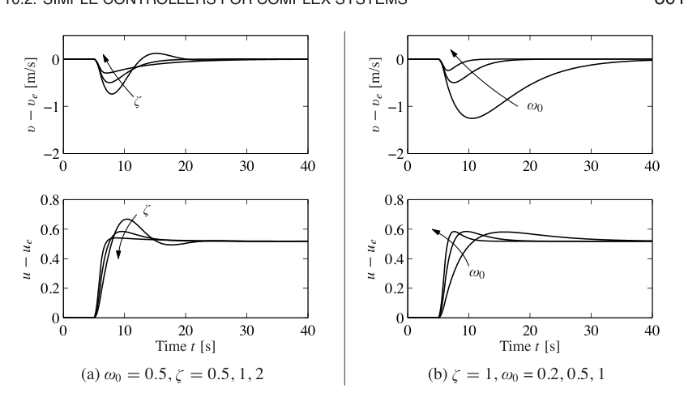
PI 控制器也可以用于具有二阶动态的过程，但闭环极点的可能位置会受到限制。使用 PID 控制器时，可以控制二阶系统，使闭环极点任意配置，见习题 10.2。
除了寻找低阶模型并据此设计控制器，也可以使用高阶模型，并只尝试放置少数主导极点。积分控制器有一个参数，因此可以配置一个极点。考虑传递函数为 \(P(s)\) 的过程。使用积分控制器时，环路传递函数为 \(L(s)=k_iP(s)/s\)。闭环特征多项式的根满足
要求 \(s=-a\) 为一个根，则控制器增益应选择为
如果 \(a\) 很小，极点 \(s=-a\) 会成为主导极点。类似方法也可用于 PI 和 PID 控制器。
10.3 PID 调节
控制系统用户经常需要调节控制器参数，以获得期望行为。调节方法很多。一种方法是按照上一节所述，经历建模和控制设计的常规步骤。由于 PID 控制器参数很少，人们也发展了许多专门的经验方法，用于直接调节控制器参数。最早的调节规则由齐格勒和尼科尔斯 [210] 提出。他们的想法是进行一个简单实验，从实验中提取过程动态的某些特征，再根据这些特征确定控制器参数。
齐格勒-尼科尔斯调节
20 世纪 40 年代，齐格勒和尼科尔斯基于时域和频域中对过程动态的简单刻画，发展了两种控制器调节方法。
时域方法基于对过程开环单位阶跃响应一部分的测量，如图 10.7a 所示。测量时，对过程施加单位阶跃输入并记录响应。响应由参数 \(a\) 和 \(\tau\) 刻画，它们是阶跃响应最陡切线与坐标轴的截距。参数 \(\tau\) 是系统时滞的近似，\(a/\tau\) 是阶跃响应的最大斜率。注意，为了得到这些参数，不必等到系统达到稳态；只要响应已经出现拐点即可。控制器参数见表 10.1。这些参数是通过对一系列代表性过程的大量仿真得到的。研究者先为每个过程手动调节控制器，然后尝试把控制器参数与 \(a\) 和 \(\tau\) 关联起来。
表 10.1：齐格勒-尼科尔斯调节规则。表 (a) 的阶跃响应法用截距 \(a\) 和表观时滞 \(\tau\) 给出参数。表 (b) 的频率响应法用临界增益 \(k_c\) 和临界周期 \(T_c\) 给出控制器参数。
| 类型 | \(k_p\) | \(T_i\) | \(T_d\) |
|---|---|---|---|
| P | \(1/a\) | ||
| PI | \(0.9/a\) | \(3\tau\) | |
| PID | \(1.2/a\) | \(2\tau\) | \(0.5\tau\) |
| 类型 | \(k_p\) | \(T_i\) | \(T_d\) |
|---|---|---|---|
| P | \(0.5k_c\) | ||
| PI | \(0.4k_c\) | \(0.8T_c\) | |
| PID | \(0.6k_c\) | \(0.5T_c\) | \(0.125T_c\) |
在频域方法中，将一个控制器连接到过程上，把积分增益和微分增益设为零，然后逐渐增加比例增益，直到系统开始振荡。记录比例增益的临界值 \(k_c\) 和振荡周期 \(T_c\)。由奈奎斯特稳定性判据可知，环路传递函数 \(L=k_cP(s)\) 在频率
处穿过临界点。因此，该实验给出了过程传递函数的奈奎斯特曲线上相位滞后为 \(180^\circ\) 的点，如图 10.7b 所示。
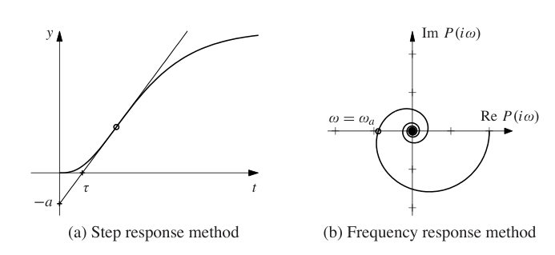
齐格勒-尼科尔斯方法在 20 世纪 40 年代提出时产生了巨大影响。这些规则使用简单，并能为手动调节提供初始值。控制器制造商很快把这些想法用于日常操作。遗憾的是，齐格勒-尼科尔斯调节规则有两个严重缺点：使用的过程信息太少，所得闭环系统缺乏鲁棒性。
阶跃响应方法可以通过用模型
中的参数 \(K,\tau,T\) 刻画单位阶跃响应而显著改进。这些参数可以通过把模型拟合到测得的阶跃响应得到。注意，这个实验比图 10.7a 中的实验耗时更长，因为为了确定 \(K\)，必须等待系统达到稳态。还要注意，齐格勒-尼科尔斯规则中的截距 \(a\) 满足
频率响应方法也可以通过测量奈奎斯特曲线上的更多点加以改进，例如零频增益 \(K\)，或者过程具有 \(90^\circ\) 相位滞后的点。后一个点可以通过连接积分控制器并增加其增益直到系统达到稳定边界来获得。这个实验还可以用继电反馈自动完成，本节稍后会讨论。
改进调节规则有很多版本。作为说明，这里给出基于文献 [16] 的 PI 控制规则：
括号中的数值是齐格勒-尼科尔斯规则给出的值。注意，改进公式通常给出的控制器增益低于 齐格勒-尼科尔斯方法。对动态由时滞主导的系统，也就是 \(\tau\gg T\) 时，积分增益会更高。
例 10.4 轻敲模式原子力显微镜
例 10.2 讨论了原子力显微镜轻敲模式中垂直运动动态的一个简化模型。选择 \(1/a\) 作为时间单位，可以把传递函数归一化。归一化传递函数为
其中
当 \(\zeta=0.002\)、\(n=20\) 时，传递函数的奈奎斯特图如图 10.8a 所示。奈奎斯特曲线与实轴最左侧交点为 \(\operatorname{Re}s=-0.0461\)，对应 \(\omega=13.1\)。因此，临界增益为 \(k_c=21.7\)，临界周期为 \(T_c=0.48\)。使用齐格勒-尼科尔斯调节规则，对 PI 控制器可得参数
使用这个控制器时，稳定裕度为 \(s_m=0.31\)，相当小。控制器阶跃响应见图 10.8，特别要注意控制信号中有很大的超调。
改进齐格勒-尼科尔斯规则 (10.11) 给出控制器参数
稳定裕度变为 \(s_m=0.61\)。图 10.8 中也显示了这个控制器下的阶跃响应。与原始齐格勒-尼科尔斯规则得到的响应相比，超调已经减小。注意，控制信号几乎瞬时达到其稳态值。由例 10.2 可知，纯积分控制器的归一化增益为 \(k_i=1/(2+T_n)=0.44\)。把它与 PI 控制器的增益比较，可以看出 PI 控制器的性能远好于纯积分控制器。
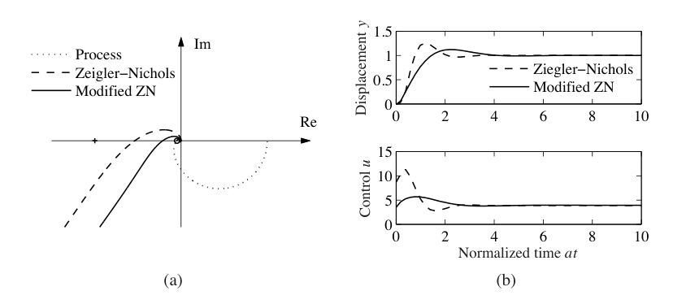
继电反馈
齐格勒-尼科尔斯频率响应方法通过增加比例控制器增益直到发生振荡，来确定临界增益 \(k_c\) 和对应临界周期 \(T_c\)，也等价于确定奈奎斯特曲线与负实轴相交的点。一种自动获得这些信息的方法，是把过程与具有继电特性的非线性元件组成反馈回路，如图 10.9a 所示。对许多系统而言，此时会出现振荡，如图 10.9b 所示。继电器输出 \(u\) 是方波，过程输出 \(y\) 接近正弦波。而且输入和输出反相，这意味着系统以临界周期 \(T_c\) 振荡，此时过程相位滞后为 \(180^\circ\)。注意，具有恒定周期的振荡会很快建立起来。
临界周期就是振荡周期。为了确定临界增益，把方波继电器输出展开为傅里叶级数。注意图中过程输出几乎为正弦波，因为过程有效衰减了高次谐波。因此，只需考虑输入的一次谐波分量。令 \(d\) 为继电器幅值，则方波输入的一次谐波幅值为 \(4d/\pi\)。如果 \(a\) 是过程输出幅值，那么临界频率 \(\omega_c=2\pi/T_c\) 处的过程增益为
临界增益为
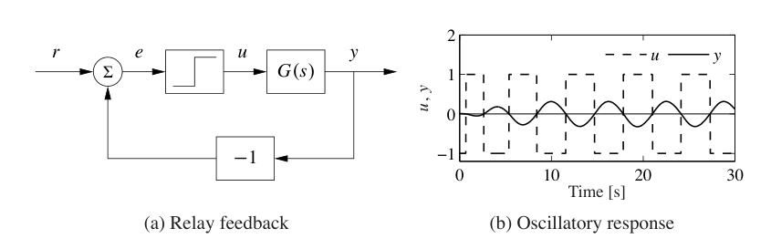
得到临界增益 \(k_c\) 和临界周期 \(T_c\) 后，就可以使用齐格勒-尼科尔斯规则确定控制器参数。若把模型拟合到继电实验得到的数据上，可以得到更好的调节结果。
继电实验可以自动化。由于振荡幅值与继电器输出成比例，通过调节继电器输出很容易控制振荡幅值。基于继电反馈的自动调节已经用于许多商业 PID 控制器。调节时只需按下一个按钮来激活继电反馈。继电幅值会自动调节，使振荡保持足够小；一旦调节完成，继电反馈就会切换回 PID 控制器。
10.4 积分饱和
控制系统的许多方面可以用线性模型理解。然而，有些非线性现象必须加以考虑。最典型的是执行器限制：电机速度有限，阀门不能超过全开或全闭，等等。对在较宽条件范围内运行的系统，控制变量可能达到执行器限制。一旦发生这种情况，反馈回路就被打断，系统在开环下运行，因为只要执行器保持饱和，执行器输出就停留在限制值上，与过程输出无关。由于误差通常不为零，积分项还会继续累积。于是积分项和控制器输出可能变得很大。即使误差随后改变，控制信号仍会保持饱和；积分器和控制器输出可能需要很长时间才能回到饱和范围以内。结果就是出现很大的暂态。这种情况称为积分饱和，下面的例子给出说明。
例 10.5 巡航控制
图 10.10a 展示了积分饱和效应。汽车遇到一个坡度为 \(6^\circ\) 的陡坡时，巡航控制器试图保持速度，导致油门饱和。汽车在 \(t=5\) 时遇到坡道，速度下降，油门增加以产生更多转矩。然而所需转矩太大，油门达到饱和。由于发动机产生的转矩只略大于补偿重力所需的转矩，误差下降得很慢。误差很大，积分项继续累积，直到 \(t=30\) 时误差达到零；但此时控制器输出仍然大于饱和限制，执行器仍保持饱和。随后积分项开始下降，到 \(t=45\) 时速度才快速收敛到期望值。注意，控制器输出需要相当长时间才回到不饱和范围内，因此产生了很大超调。
避免积分饱和的方法很多。图 10.11 说明了其中一种方法：系统增加了一条反馈通道，通过测量实际执行器输出，或测量饱和执行器数学模型的输出，并把控制器输出 \(v\) 与执行器输出 \(u\) 的差值构成误差信号
信号 \(e_s\) 通过增益 \(k_t\) 反馈到积分器输入。当没有饱和时，\(e_s=0\)，额外反馈回路对系统没有影响。当执行器饱和时，\(e_s\) 以使其趋近零的方式反馈到积分器。这意味着控制器输出会保持在饱和限制附近。于是，一旦误差变号，控制器输出就会立即变化，从而避免积分饱和。
控制器输出复位的速度由反馈增益 \(k_t\) 决定；较大的 \(k_t\) 给出较短复位时间。参数 \(k_t\) 不能太大，否则测量噪声可能导致不希望出现的复位。一个合理选择是让 \(k_t\) 取 \(1/T_i\) 的某个比例。下面通过巡航控制系统说明如何避免积分饱和。
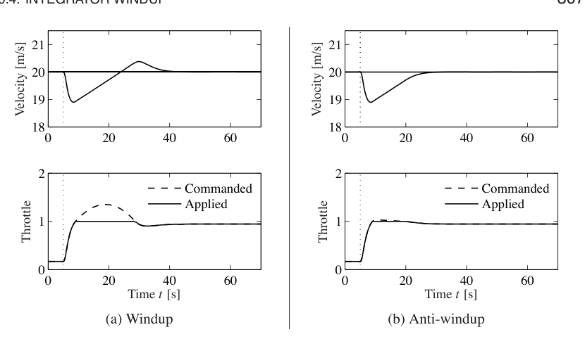
例 10.6 带抗积分饱和的巡航控制
图 10.10b 显示对图 10.10a 中同一系统使用带抗积分饱和控制器后的结果。由于来自执行器模型的反馈，积分器输出很快复位到某个值，使控制器输出正好处在饱和限制处。系统行为与图 10.10a 截然不同，大超调被避免。仿真中的跟踪增益为 \(k_t=2\)。
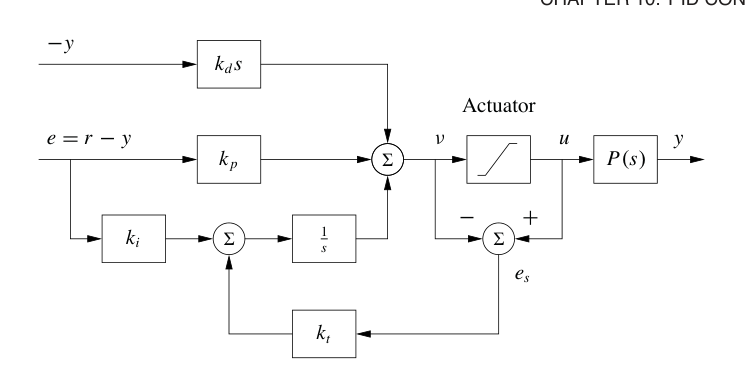
10.5 实现
实现 PID 控制器时，有许多实际问题需要考虑。这些问题是长期实践经验发展出来的。本节讨论其中最常见的一些。类似考虑也适用于其他类型控制器。
微分滤波
微分作用的一个缺点是，理想微分器对高频信号具有高增益。这意味着高频测量噪声会在控制信号中产生大幅变化。可以把 \(k_ds\) 替换为
来减小测量噪声影响。这个表达式可解释为对低通滤波后的信号进行理想微分。对于小 \(s\)，传递函数近似为 \(k_ds\)；对于大 \(s\)，它等于 \(k_d/T_f\)。因此，这个近似对低频信号表现为微分器，对高频信号表现为常数增益。滤波时间通常选为
其中 \(N\) 常取 2 到 20。若按图 10.3b 所示，用信号和其滤波版本之间的差实现微分，则滤波会自动出现，见式 (10.5)。
除了只对微分项滤波，也可以使用理想控制器，并对测量信号滤波。带二阶滤波器的这种控制器传递函数为
设定值加权
图 10.1 显示了 PID 控制器的两种结构。图 10.1a 中的控制器使用误差反馈，其中比例、积分和微分作用都作用于误差。在图 10.2c 的 PID 控制器仿真中，控制信号一开始有很大尖峰，这是由参考信号的微分造成的。使用图 10.1b 中的控制器可以避免这个尖峰，因为比例和微分作用只作用于过程输出。一个介于二者之间的形式为
其中比例作用和微分作用分别作用于参考信号的比例 \(\beta\) 和 \(\gamma\)。积分作用必须作用于误差，以确保稳态误差趋于零。不同 \(\beta\) 和 \(\gamma\) 下得到的闭环系统，对负载扰动和测量噪声的响应相同。对参考信号的响应不同，因为它依赖于 \(\beta\) 和 \(\gamma\)。这两个参数称为参考权重或设定值权重。下面用一个例子说明设定值加权的影响。
例 10.7 带设定值加权的巡航控制
考虑例 10.3 中推导的巡航控制系统 PI 控制器。图 10.12 显示设定值加权对系统参考信号响应的影响。当 \(\beta=1\) 时，也就是误差反馈，速度有超调，控制信号油门一开始接近饱和限制。当 \(\beta=0\) 时没有超调，控制信号小得多，驾驶舒适性明显更好。频率响应从另一个角度显示了相同效果。参数 \(\beta\) 通常位于 0 到 1 之间，\(\gamma\) 通常取零，以避免参考值变化时控制信号中出现大的暂态。
式 (10.14) 给出的控制器，是第 7.5 节讨论的二自由度一般控制器结构的一个特例。
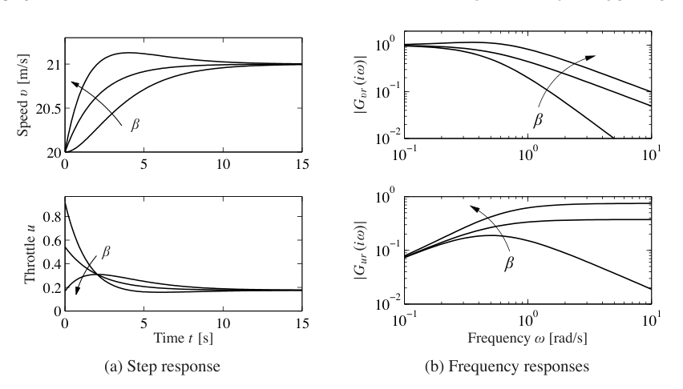
基于运算放大器的实现
PID 控制器可以用不同技术实现。图 10.13 显示如何通过运算放大器反馈实现 PI 和 PID 控制器。
为了说明图 10.13b 中的电路是 PID 控制器，使用例 8.3 中推导的运算放大器输入电压 \(e\) 和输出电压 \(u\) 之间的近似关系：
在这个方程中，\(Z_1\) 是放大器负输入端与输入电压 \(e\) 之间的阻抗，\(Z_2\) 是放大器零输入端与输出电压 \(u\) 之间的阻抗。阻抗为
于是输入电压 \(e\) 和输出电压 \(u\) 之间满足
这是式 (10.1) 形式的 PID 控制器输入输出关系。按上面的符号，其主要时间常数可读为
若令输入侧用于微分的电容为零，就得到 PI 控制器的对应结果。
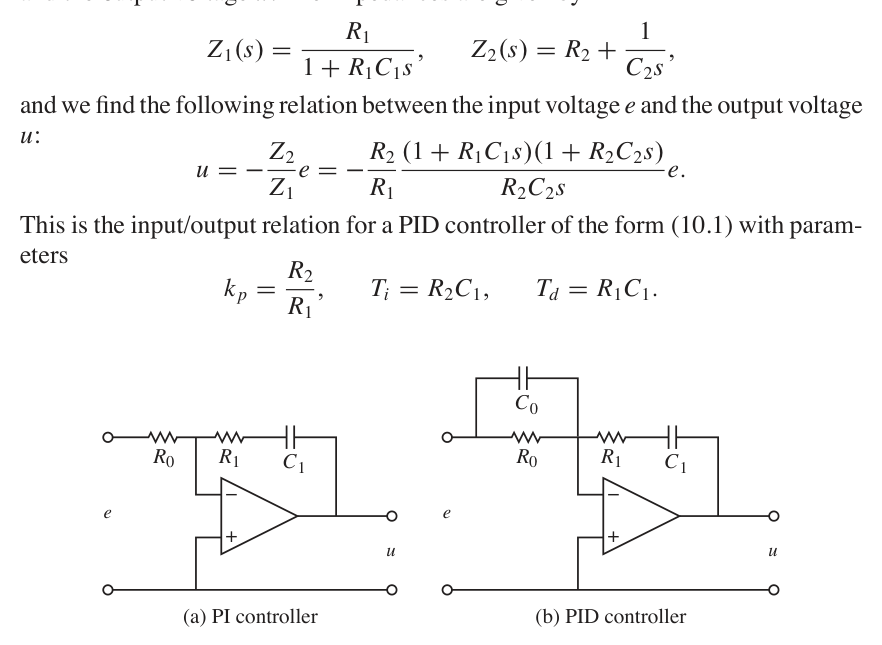
计算机实现
本节简要说明如何用计算机实现 PID 控制器。计算机通常周期性运行：传感器信号被采样并由 A/D 转换器转换为数字形式，控制信号被计算出来，再转换为模拟形式送到执行器。操作顺序如下：
- 等待时钟中断。
- 读取传感器输入。
- 计算控制信号。
- 将输出发送给执行器。
- 更新控制器变量。
- 重复。
注意，一旦输出可用，就应立即发送给执行器。通过让第 3 步中的计算尽可能短，并在输出命令发出后再执行所有更新，可以使时滞最小。遗憾的是，这种减少延迟的简单方法在商业系统中很少使用。
作为说明，考虑图 10.11 中的 PID 控制器，它具有滤波微分、设定值加权和抗积分饱和保护。该控制器是一个连续时间动态系统。为了用计算机实现，必须用离散时间系统近似连续时间系统。
图 10.11 给出了带抗积分饱和的 PID 控制器框图。信号 \(v\) 是比例项、积分项和微分项之和，控制器输出为
其中 \(\operatorname{sat}\) 是模拟执行器的饱和函数。比例项 \(k_p(\beta r-y)\) 的实现很简单，只要把连续变量替换为采样值即可。因此
其中 \(\{t_k\}\) 表示采样时刻，也就是计算机读取输入的时刻。令 \(h\) 为采样时间，因此 \(t_{k+1}=t_k+h\)。积分项通过用求和近似积分得到：
其中 \(T_t\) 是抗积分饱和的跟踪时间常数，等价于连续反馈增益 \(k_t=1/T_t\)。滤波微分项 \(D\) 由微分方程
给出。用后向差分近似导数：
可改写为
使用后向差分的好处是，对所有 \(h>0\)，参数 \(T_f/(T_f+h)\) 都非负且小于 1，从而保证差分方程稳定。整理式 (10.15) 到式 (10.17)，PID 控制器可用下面的伪代码描述：
% 预先计算控制器系数
bi = ki*h
ad = Tf/(Tf+h)
bd = kd/(Tf+h)
br = h/Tt
% 控制算法主循环
while (running) {
r = adin(ch1) % 从通道 ch1 读取设定值
y = adin(ch2) % 从通道 ch2 读取过程变量
P = kp*(b*r-y) % 计算比例部分
D = ad*D - bd*(y-yold) % 更新微分部分
v = P + I + D % 计算临时输出
u = sat(v, ulow, uhigh) % 模拟执行器饱和
daout(ch1) % 设置模拟输出通道 ch1
I = I + bi*(r-y) + br*(u-v) % 更新积分项
yold = y % 更新旧过程输出
sleep(h) % 等到下一个更新周期
}
预先计算系数 \(b_i,a_d,b_d,b_r\) 可节省主循环中的计算时间。这些计算只需在控制器参数改变时执行。主循环每个采样周期执行一次。程序有三个状态变量：\(yold\)、\(I\) 和 \(D\)。可以牺牲一点代码可读性来去掉一个状态变量。从读取模拟输入到设置模拟输出之间的延迟包括四次乘法、四次加法和一次 \(\operatorname{sat}\) 函数求值。如果需要，所有计算都可以用定点数完成。注意，这段代码计算的是过程输出的滤波微分，并且包含设定值加权和抗积分饱和保护。
10.6 延伸阅读
PID 控制的历史非常丰富，可以追溯到控制理论奠基之初。Bennett [28, 29] 和 Mindel [152] 给出了很易读的介绍。齐格勒-尼科尔斯 PID 调节规则最早发表于 1942 年 [210]，其发展基于大量气动模拟器实验，以及麻省理工学院 Vannevar Bush 的微分分析机。文献 [39] 对齐格勒的访谈提供了理解齐格勒-尼科尔斯规则发展的有趣视角。文献 [33]、[180] 和 [205]，以及本章开头引用的论文 [58]，从工业角度讨论了 PID 控制。文献 [16] 对 PID 控制作了全面介绍。PID 控制的交互式学习工具可从 http://www.calerga.com/contrib 下载。
习题
10.1 理想 PID 控制器。考虑图 10.1 中框图表示的系统。假设过程传递函数为 \(P(s)=b/(s+a)\)，证明从 \(r\) 到 \(y\) 的传递函数为
(a)
(b)
任选一些参数，比较两个系统的阶跃响应。
10.2 考虑二阶过程
带 PI 控制器的闭环系统为三阶系统。证明只要闭环极点之和为 \(-a_1\)，就可以配置闭环极点。给出使闭环特征多项式为
的控制器参数方程。
10.3 考虑传递函数为 \(P(s)=(s+1)^{-2}\) 的系统。寻找一个积分控制器，使闭环极点位于 \(s=-a\)，并确定使积分增益最大的 \(a\) 值。确定系统其他极点，并判断该极点能否看作主导极点。与式 (10.6) 给出的积分增益进行比较。
10.4 齐格勒-尼科尔斯调节。考虑传递函数为
的系统。使用齐格勒-尼科尔斯阶跃响应法和频率响应法确定 P、PI 和 PID 控制器参数。比较不同规则得到的参数值，并讨论结果。
10.5 车辆转向。为车辆转向系统设计一个比例积分控制器，使闭环特征多项式为
10.6 拥塞控制。文献 [101, 137] 推导了 TCP 传输的一个简化流模型。线性化动态由传递函数
建模，它描述期望队列长度 \(q\) 与期望丢包概率 \(p\) 之间的动态关系。参数为
其中 \(c\) 是瓶颈容量，\(N\) 是进入链路的源数量，\(\tau_e\) 是往返时延。使用参数值 \(N=75\) 个源、\(c=1250\) 包/s 和 \(\tau_e=0.15\)，用一种齐格勒-尼科尔斯规则及其对应改进规则求 PI 控制器参数。仿真所得 PI 控制器闭环系统响应。
10.7 电机驱动。考虑习题 2.10 中的电机驱动模型。建立该系统的近似二阶模型，并用它设计一个理想 PD 控制器，使闭环系统特征值位于
按式 (10.13) 加入低通滤波，并探索在保持良好稳定裕度的情况下，\(\omega_0\) 可以取多大。用所选控制器仿真闭环系统，并与习题 6.11 中基于状态反馈的控制器结果比较。
10.8 考虑习题 10.7 中的系统，研究如果把微分项的二阶滤波替换为一阶滤波，会发生什么。
10.9 调节规则。对下列传递函数应用齐格勒-尼科尔斯规则和改进调节规则，设计 PI 控制器：
计算稳定裕度，并探索其中是否有规律。
10.10 积分饱和与抗积分饱和。考虑过程输入在 \(|u|>1\) 时饱和的系统，其线性动态为
对该过程使用形式为 \(C(s)=1+1/s\) 的 PI 控制器。仿真系统对参考信号阶跃变化的响应。再使用图 10.11 中的抗积分饱和方案重复仿真。
10.11 条件积分抗饱和。为避免积分饱和，人们提出了许多方法。其中一种称为条件积分，即只有误差足够小时才更新积分。为说明这种方法，考虑带 PI 控制的系统
其中 \(e=r-x_1\)。对参数
画出系统相图，并讨论系统性质。这个例子说明，如果缺少仔细分析，随意引入临时非线性会带来困难。